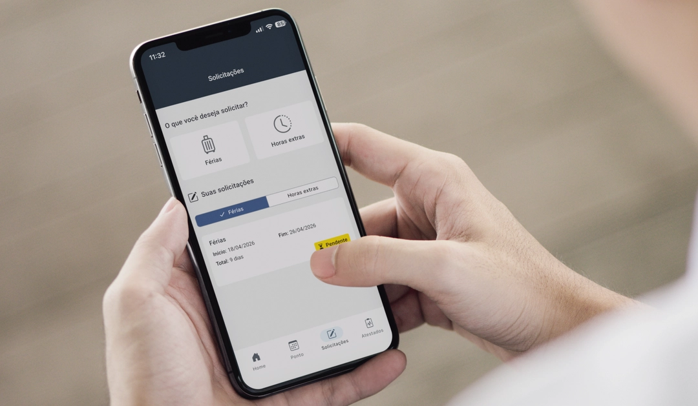
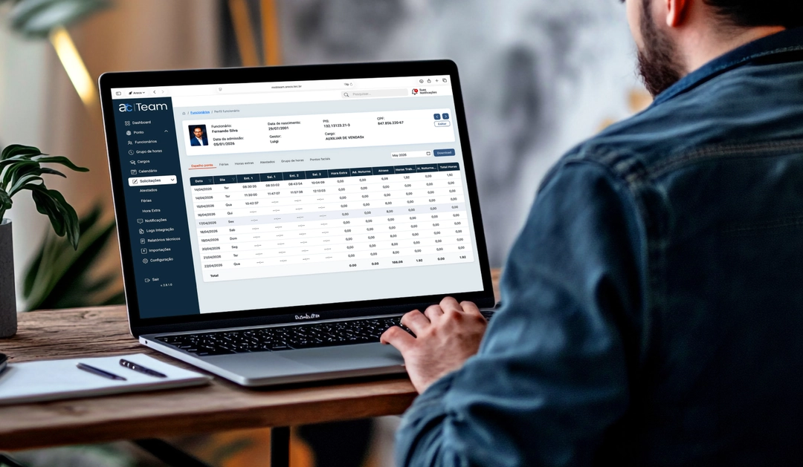
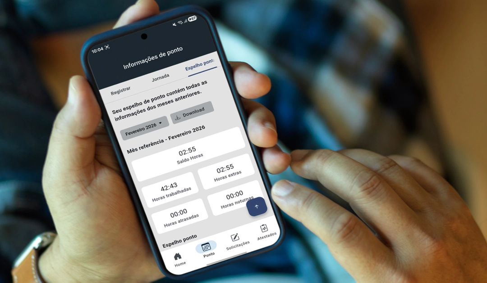
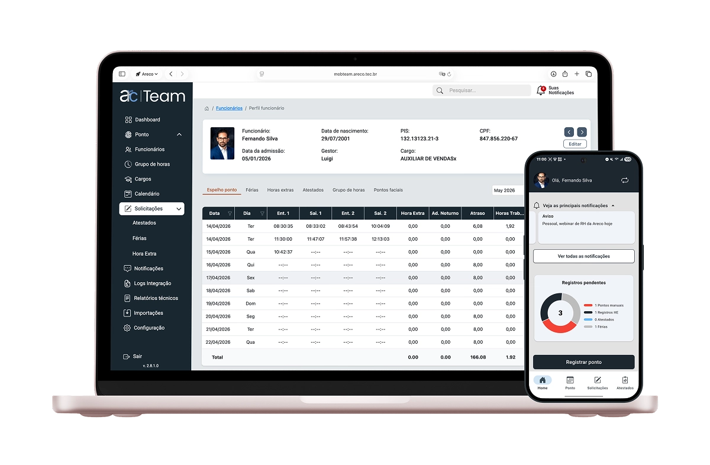
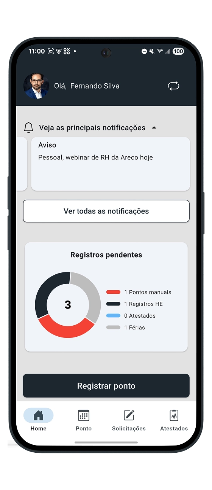
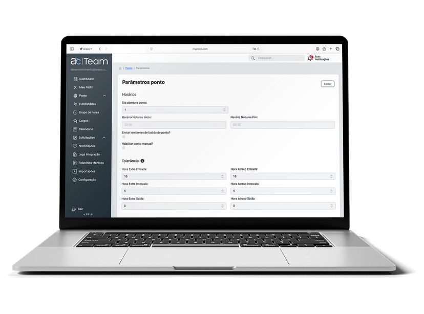
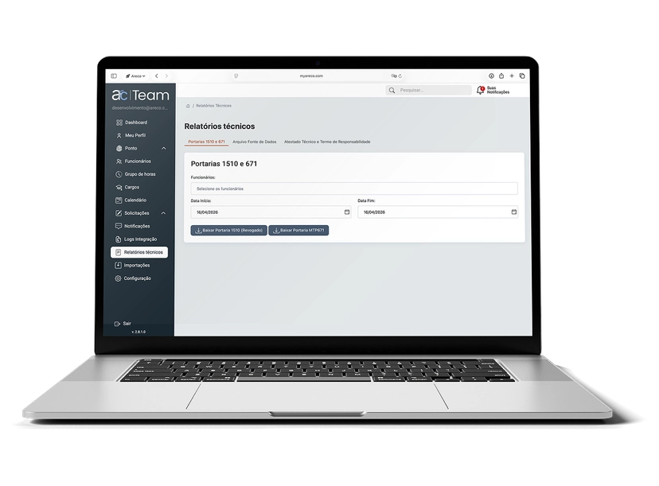
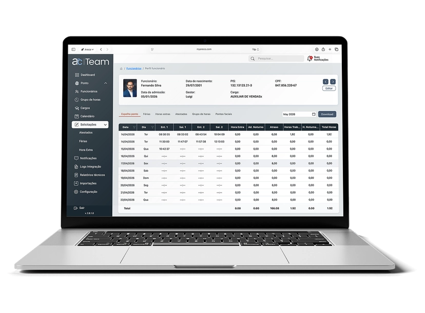

Ponto com geolocalização
Registro de entrada e saída com data, hora e localização. Ontime, manual, online ou offline, o ponto é registrado.
Controle da jornada de trabalho
O arcTeam é a plataforma de gestão de jornada. No app, o colaborador registra ponto, acompanha horas, envia atestados, solicita férias e horas extras. Na central, os gestores aprovam, configuram regras, acompanham indicadores e garantem conformidade.



Sete combinações, três modalidades. Controlador facial, QR Code ou pelo App.
Horas extras, férias e atestados. A solicitação acompanha justificativa, período e anexos.
Batidas manuais, solicitações, são avaliadas em uma interface única.
Jornadas, aprovações e registros sincronizados ao VSat. A folha de pagamento opera melhor.
O colaborador acompanha entradas, saídas, horas extras e ajustes direto no app.
Registro de entrada e saída com data, hora e localização. Ontime, manual, online ou offline, o ponto é registrado.
Exportação de arquivos em conformidade com a MTP 671. Relatórios técnicos, arquivo fonte de dados e atestado técnico prontos para fiscalização.
Horas extras, atestados médicos e solicitações de férias passam pelo gestor antes de entrarem na folha. Cada decisão com histórico e rastreabilidade.
Dashboard com visão consolidada de batidas, jornadas, pendências e indicadores. O RH opera com painel de controle, não com planilha.
Documentos de rotina transformados em fluxos de assinatura digital. Com a folha do VSat, documentos como holerite, espelho ponto, avaliações, podem ser integrados ao arcSign, e disparados para assinatura digital.





Fale com a gente pelo WhatsApp para conhecer a linha arc e entender como ela pode digitalizar ainda mais sua operação.
Entrar em contato Resposta em minutos